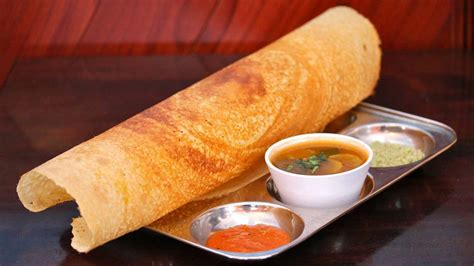

Dosa

Description
Dosas are a thin, savory crepe-like Indian pancake traditionally eaten for breakfast, but I like them anytime. These may not be very authentic, but the y are a tasty alternative that appeals to the typical American pancake.
Ingredients
- 1 cup brown rice flour
- ½ cup whole wheat flour
- 1 ½ cups water
- 1 red onion, finely chopped
- 1 clove garlic, minced
- ¼ cup fresh cilantro, chopped
- ¼ teaspoon white sugar
- ½ teaspoon ground turmeric
- 1 teaspoon ground cumin
- 2 teaspoons whole mustard seeds
- 1 teaspoon cumin seeds
- 1 teaspoon ground coriander
- 1 teaspoon ground ginger
- 1 pinch cayenne pepper
- 3 tablespoons rice vinegar
- 1 tablespoon vegetable oil